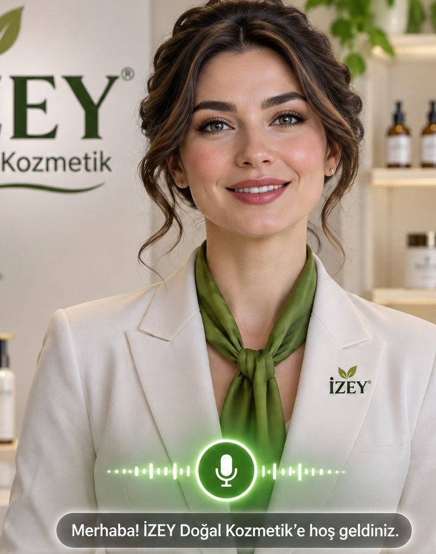

İZEY Dijital Asistan
◖◗ ◖◗
Türkçe sesli ve yazılı destek
Merhaba! İZEY Doğal Kozmetik'e hoş geldiniz. 🌿 Fason üretim, WOSS ürünleri ve aktif hammaddeler hakkında yardımcı olabilirim.
🏭 Fason üretim
🌿 WOSS ürünleri
🧪 Aktif hammaddeler
📋 Teklif al
💬 WhatsApp ile hızlı teklif alın
Fason kozmetik üretimi
WOSS ürünleri
WOS RAW MATERIALS
Numune ve fiyat teklifi
Diğer
🟢 WhatsApp'tan teklif iste
💬 WhatsApp’ta Uzmanla Görüş
Bilgiler yalnızca WhatsApp mesajı hazırlanırken kullanılır. Mesajı siz onaylayıp gönderirsiniz.
Gönder
🎙️ Konuşarak sor
🔊 Ses açık
Mikrofon izni isteğe bağlıdır. Ses tanıma, tarayıcı sağlayıcısının hizmetini kullanabilir; gizli bilgi paylaşmayın.
Bu sürüm hazır yanıtlıdır; canlı yapay zekâ değildir.
WhatsApp ile iletişim